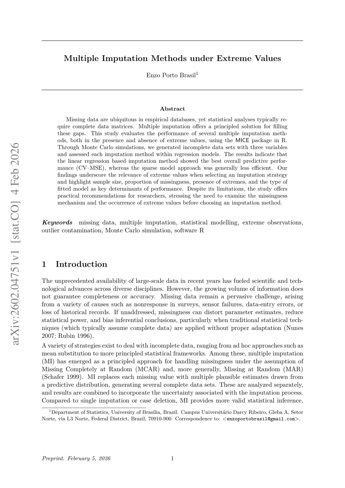
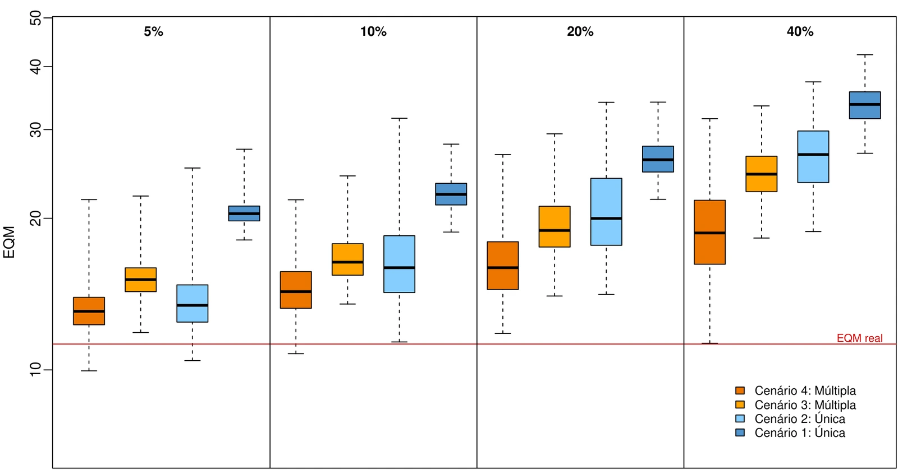
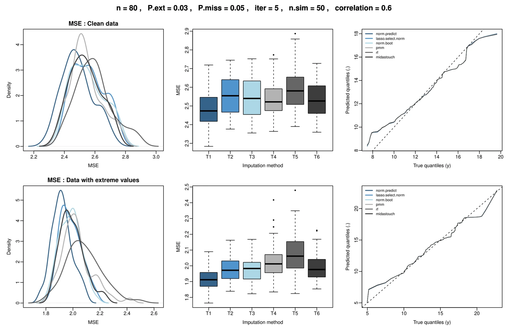
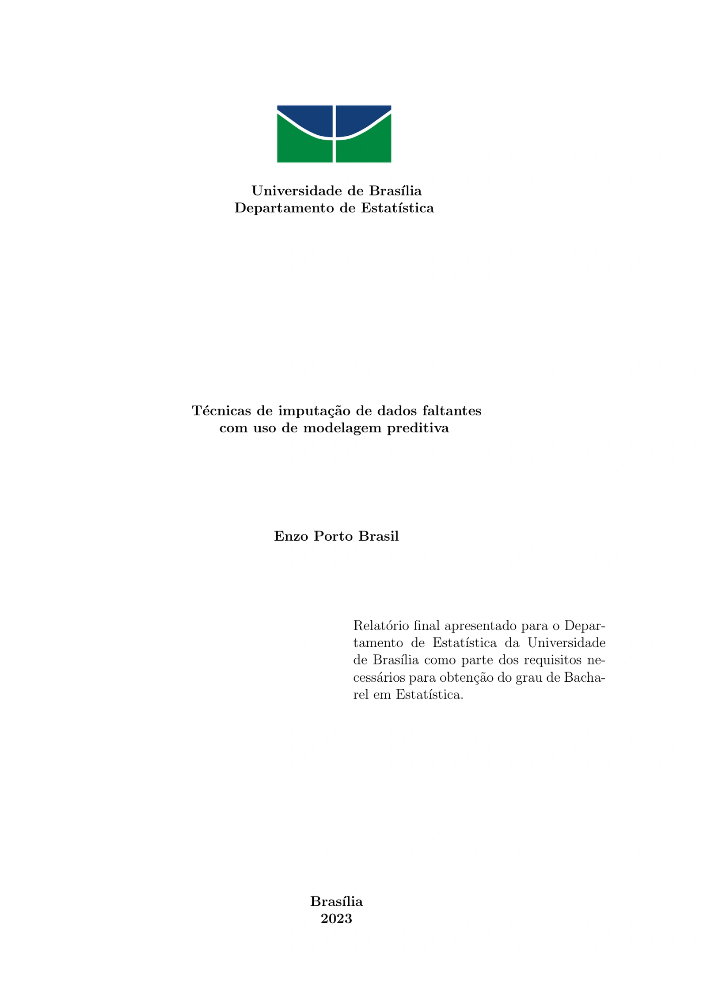
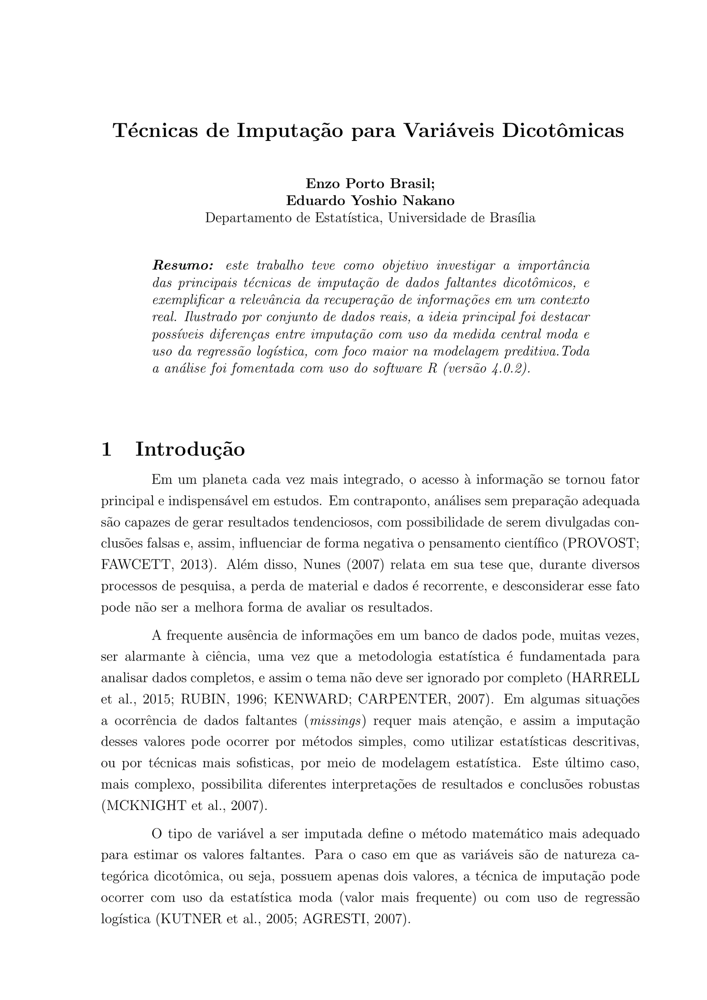

Multiple Imputation Methods under Extreme Values
Six MICE methods evaluated through Monte Carlo simulation, with attention to prediction and regression inference.
Read preprint ↗Missing data mechanisms, predictive modelling and simulation evaluation, from undergraduate research to multiple imputation in the presence of extreme and noisy observations. This area brings together papers, presentations and the experiments behind them.
The early work examined how statistical models recover missing values in controlled settings. The PIBIC study focused on dichotomous variables; the undergraduate thesis broadened the comparison of imputation strategies across variables of different statistical natures, including quantitative, count, and categorical data. Later work asks how those strategies behave when incomplete data also contain other systematic errors.



Six MICE methods evaluated through Monte Carlo simulation, with attention to prediction and regression inference.
Read preprint ↗
Conference presentation of the connection between missing data, extreme observations and MICE.
View poster ↗
A conference output from the earlier simulation-based comparison of imputation techniques.
View poster ↗Statistical models and simulation, presented at the Brazil–Colombia Binational Colloquium on Probability and Statistics.
Explore the talk →
The BSc study that developed the comparison of single and multiple imputation through simulation.
University repository ↗
An undergraduate research report on missing values in binary variables.
Read report ↗During the simulation studies, graphical reports were generated to examine imputation performance across sample sizes and settings. The collections below include examples of diagnostics and results beyond the figures selected on this page.
The later work extends the original question rather than closing it. Good prediction does not automatically imply well calibrated uncertainty, and larger samples do not necessarily remove the effects of extreme contamination. Those distinctions connect the early experiments to the continuing study of imputation as a modelling choice.